Oji, Nara: things to do, food and stays
Oji · Nara
Oji
Highlighted on the Nara map.
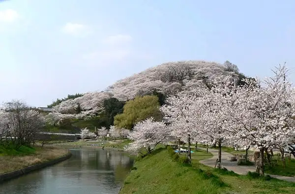
Stay
東横ＩＮＮ奈良王寺駅南口

Toyoko INN Nara Oji Eki Minamiguchi
Inn in Oji with breakfast available.
Dining
煮干し一直線
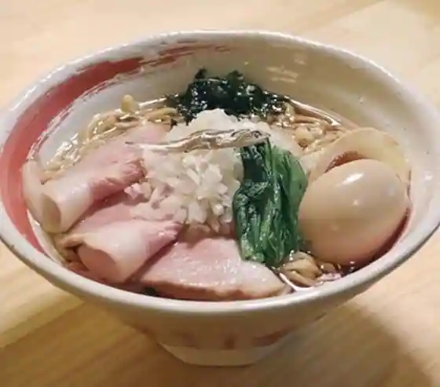
Niboshi Shi Itchokusen
ミネロワ
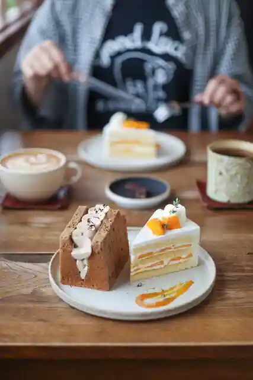
Minerowa
カレー専門店 横浜 王寺店
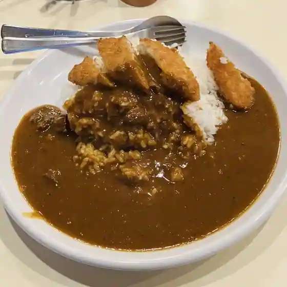
Kare Senmon Yokohama Oji
名物王寺ラーメン
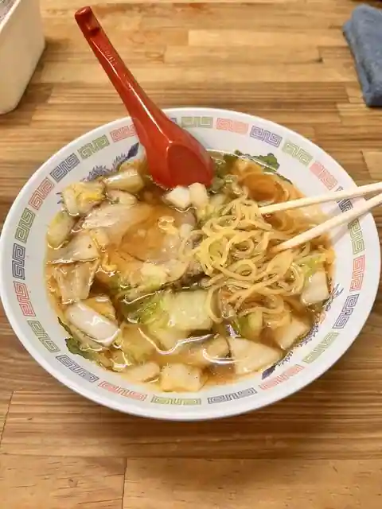
Meibutsu Oji Ramen
カフェ&ケーキラボ ムー
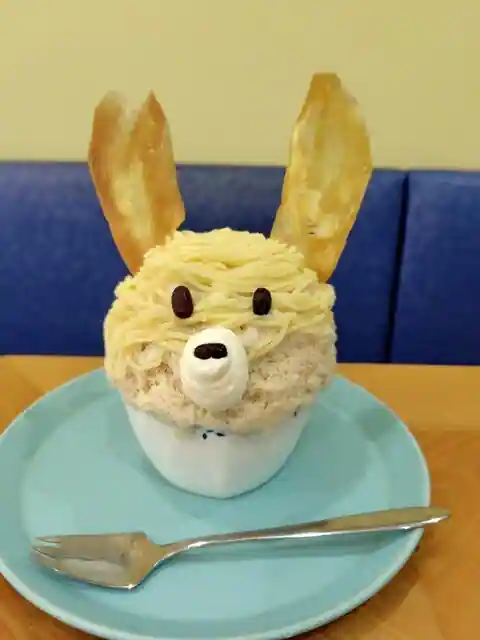
Cafe & Kekirabo Mu
魚八庭
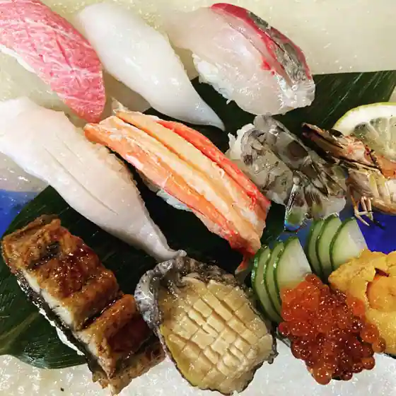
Sakana Hachi Niwa
定食のハナレ
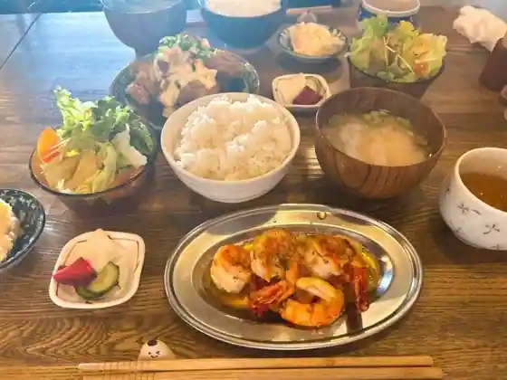
Teishoku No Hanare
大衆酒場 中庭
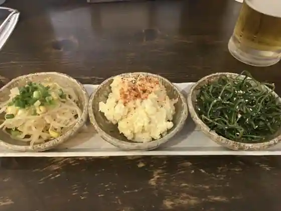
Taishu Sakaba Nakaniwa
創作中華料理 縁
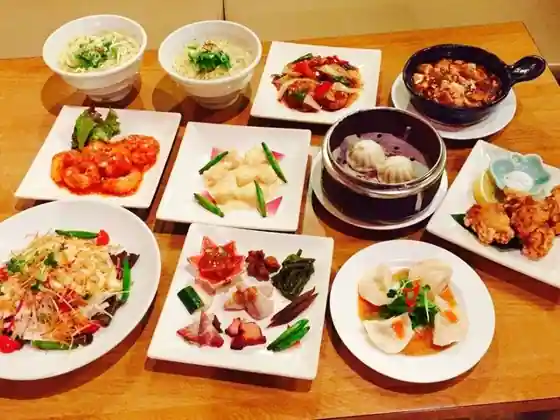
Sosaku Chukaryori Heri
マユール
Mayuru
焼肉 天道
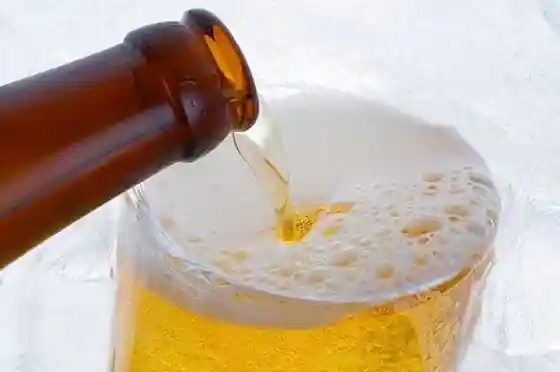
Yakiniku Tendo
惣菜 松本
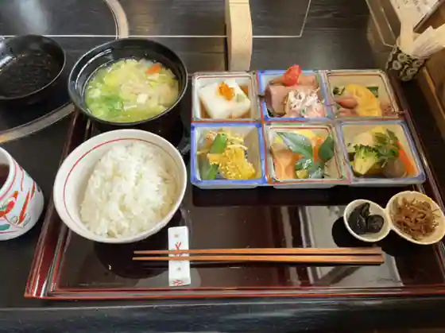
Sozai Matsumoto
中国料理 百楽 王寺店
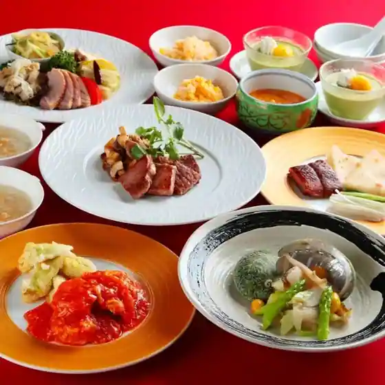
Chugokuryori Hyakuraku Oji
いごっそう 彩肴
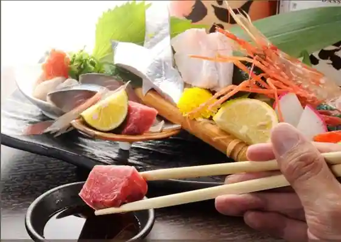
Igosso Sai Sakana
まるしん
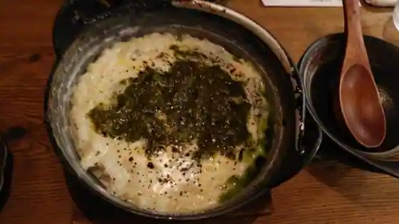
Marushin
JOSEP CRAFT BEER & MEATS
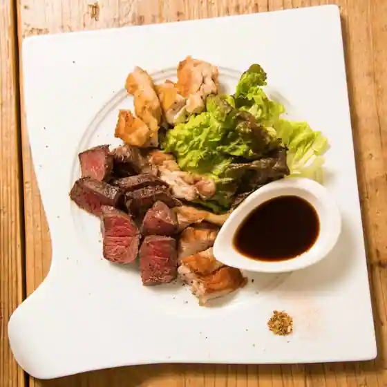
JOSEP CRAFT BEER & MEATS
カフェ+スタジオ フラット
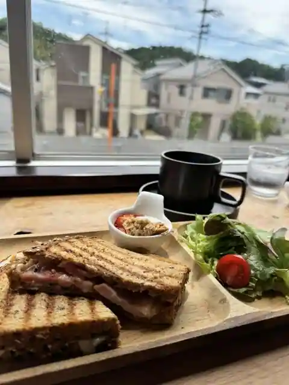
Cafe + Sutajio Furatto
麺屋やまひで 王寺店
Men Ya Yamahide Oji
元
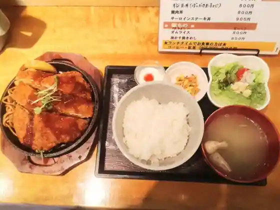
Moto
串かつ 王寺 久兵衛
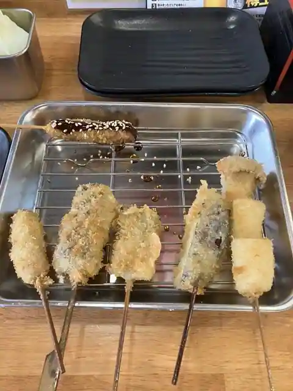
Kushi Katsu Oji Kyube
雪丸茶屋
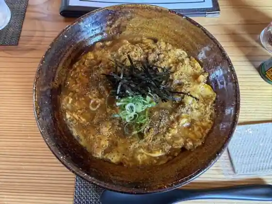
Yuki Maru Chaya
まがりラーメン×洋食居酒屋tsubasa
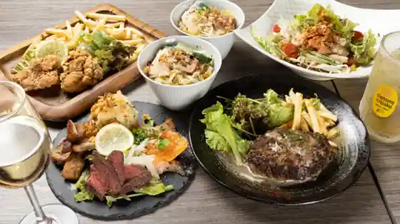
Magari Ramen X Yoshoku Izakaya tsubasa
大阪うどん きらく 王寺店
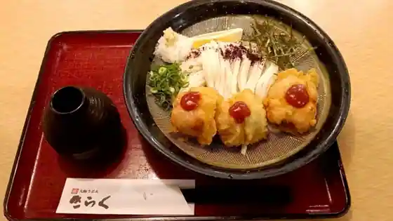
Osaka Udon Kiraku Oji
黒天KURO-TEN
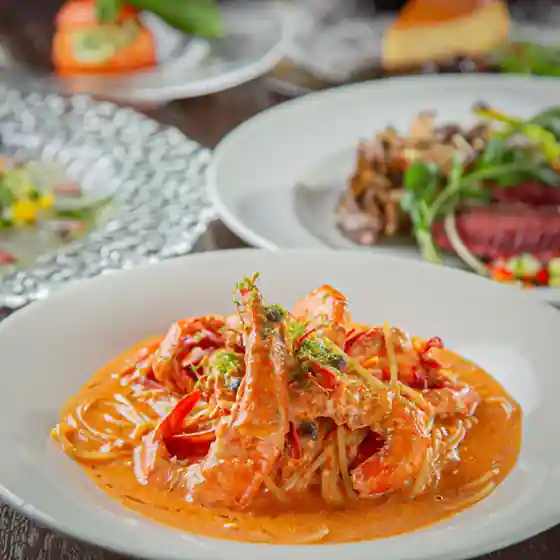
Kokuten KURO-TEN
Sights
Myojin Yama Nature Forest
Oji Yawaragi Hall
Daruma Tera